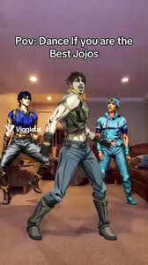

Em novembro de 2019, Lil Nas X surgiu no tapete vermelho do American Music Awards com um exuberante terno verde limão sobrepondo peças com estampa de zebra. No campo dos comentários, usuários rapidamente compararam o senso de moda do cantor com o do anime JoJo's Bizarre Adventure. "Parem de dizer que eu pareço um personagem de JoJo", disse o jovem em suas redes sociais, após centenas de comentários idênticos.
Essa anedota bem curiosa serve para percebermos como um mangá criado em meados dos anos 1980 foi redescoberto nos anos 2010, tendo parte de seu sucesso ressignificado por causa de piadas na internet. Esse é o mundo de JoJo's Bizarre Adventure.
O começo de tudo
JoJo's Bizarre Adventure, ou JoJo no Kimyou na Bouken em japonês, é um mangá de Hirohiko Araki iniciado em 1987 e com capítulos publicados semanalmente na Shonen Jump, a maior revista de mangás do Japão. A partir de 2005, o mangá saiu da revista e se mudou para a Ultra Jump, esta focada no público adulto e com periodicidade mensal.
Jojo's Bizarre Adventure
Shonen Jump/Shueisha/Reprodução
A história de JoJo's Bizarre Adventure segue em publicação há mais de 30 anos, mas não se trata de uma única história corrida, como Naruto ou One Piece. JoJo's é dividido em partes, e narra a trajetória da família Joestar e seus descendentes na luta contra o demônio Dio.
A aventura sobrenatural começa no arco Phantom Blood, em que somos apresentados a Jonathan Joestar, um garoto rico que precisa conviver com o diabólico Dio Branco, filho de um homem que "salvou" a vida de seu pai (com muitas aspas). Dio se transforma em um vampiro ao vestir uma máscara de pedra e decide acabar com a vida de Jonathan porque... bem... Dio é o vilão da história.
A cada arco de JoJo's Bizarre Adventure, Hirohiko Araki abandona os personagens do arco passado e ambienta sua história em uma nova época, nova localidade e com personagens da mesma linhagem familiar dos anteriores. Em comum temos apenas protagonistas cujas iniciais formam o nome "JoJo". No arco Battle Tendency o protagonista é Joseph Joestar, o neto do JoJo de Phantom Blood, e o arco Stardust Crusaders tem como personagem principal Jotaro Kujo, parente de Joseph. Já a estrela de Diamond is Unbreakable é Josuke "Joestar".
Jojo's Bizarre Adventure/Shueisha/Reprodução
Araki vai ficando cada vez mais ousado a cada novo arco. Vento Aureo tem como personagem principal o Giorno Giovanna (que forma o nome JoJo numa leitura do italiano) e Stone Ocean conta com a primeira JoJo mulher, Jolyne Kujo. A partir daqui a história é "reiniciada" e começa a trazer uma nova linha de JoJos, com Johnny Joestar sendo o protagonista de Steel Ball Run (o primeiro arco de JoJo's Bizarre Adventure cujo subtítulo é o título do mangá) e atualmente um novo Josuke protagoniza JoJolion.
O mangá de JoJo's Bizarre Adventure tem características muito únicas. Araki é excelente criando histórias e situações para seus personagens, mas a ambientação da trama é o diferencial. Tudo tem um ar exagerado, propositalmente cafona, e depois de um tempo o autor passou a empregar um estilo único, fazendo com que a aparição de personagens mirasse no shonen de luta e acertasse em um desfile do São Paulo Fashion Week.
JoJo's sempre teve boas vendas no Japão, mas nunca ganhou um anime que o representasse da maneira devida. Em 1993 houve uma tentativa de adaptar Stardust Crusaders direto para o mercado de vídeo, mas a animação precisou cortar metade da história do mangá. Em 2007, um filme animado adaptou livremente o arco Phantom Blood para os cinemas japoneses, sem muita expressão. Nada disso chegou ao ocidente, que conheceu o universo da série através de um jogo de luta produzido pela Capcom e lançado no final dos anos 1990.
Reprodução
A série JoJo's Bizarre Adventure estava fadada a ser mais um daqueles sucessos que nunca saíram do Japão, até que em 2012 tudo mudou: em comemoração aos 25 anos da publicação original, o estúdio David Production trouxe uma série animada prometendo adaptar os dois primeiros arcos. O que vemos a partir daqui é o nascimento de algo grande demais para ficar somente no Japão.
Anime de sucesso
Um dos grandes trunfos do anime de JoJo's Bizarre Adventure produzido pelo David Production é a adaptação fiel da ambientação criada por Hirohiko Araki. O anime mescla o traço antigo com um desenvolvimento moderno, as histórias cafonas com a seriedade de uma trama sobre vampiros, e tudo com uma animação às vezes limitada, mas muito estilosa.
Jojo's Bizarre Adventure/Shueisha/David Production/Reprodução
Os momentos de impacto do mangá foram mantidos no anime com a reprodução de quadros icônicos dos quadrinhos, com direito à presença de onomatopeias (aqueles ideogramas representando sons). De certa forma, JoJo's Bizarre Adventure é quase uma paródia dos shonen de brucutu comuns nos anos 1980, e seu carisma vem justamente do exagero dos personagens e da forma como agem ou se vestem.
JoJo's Bizarre Adventure é um shonen e publicado em uma revista com várias séries de ação conhecidas, claro que suas lutas estão entre as melhores coisas. No começo da série os personagens se digladiam usando a técnica do Hamon, que resumidamente é uma força interior (como o Ki de Dragon Ball) gerado a partir da respiração. Porém, a partir de Battle Tendency o autor trouxe uma das grandes atrações da série, os stands.
Stands são materializações espirituais do poder do usuário, uma invocação de visual excêntrico que surge para auxiliar o personagem e só é visualizada por quem também tem essa habilidade. Araki foi dando nomes "normais" para os tais guarda-costas metafísicos, mas em certo ponto da história ele ligou o modo "dane-se" e encheu de nomes de músicas e bandas nas invocações, causando até problemas de direitos autorais nas adaptações.
Jojo's Bizarre Adventure/Shueisha/David Production/Reprodução
No Brasil, durante muito tempo JoJo's Bizarre Adventure era uma piada recorrente em palestras de editoras de mangá. O mercado brasileiro tem suas peculiaridades, e mangás com mais de 100 volumes são muito raros no país. Porém, em 2018 a Panini conseguiu licenciar uma versão de JoJo's dividida por arcos, e atualmente publica o terceiro, Battle Tendency.
Os Memes
Hoje em dia sabemos que uma série pode ganhar um boom de popularidade através das redes sociais, é só ver o estouro que foi Demon Slayer após viralizar trechos do 19º episódio do anime. JoJo's Bizarre Adventure chamou a atenção do público com seu estilo "over", e aos poucos seu jeitinho foi se tornando memes.
Um dos primeiros foi o meme do congelamento no clímax, a cena paralisada antes do começo da música de encerramento. Em JoJo's, o episódio termina em um momento de muita tensão, e a tela fica subitamente em tom sépia e uma seta com a mensagem "continua no próximo episódio" surge junto dos primeiros acordes da música "Roundabout" do Yes, o encerramento do anime.
Muito antes de TikTok, os fãs começaram a pegar vídeos de outras séries e encaixar esse congelamento, algo parecido com o que viria acontecer anos depois com os memes de Avenida Brasil. E falando no nosso país, uma cena de A Grande Família viralizou entre os otakus nacionais: em um episódio da série brasileira, Lineu (Marco Nanini) experimenta substâncias ilícitas e começa a curtir um disco de sua juventude. A música é justamente "Roundabout", o encerramento de JoJo's Bizarre Adventure, e o momento ganhou um novo significado para os brasileiros.
Outro meme bastante conhecido de JoJo's são as "JoJo Poses" feitas pelos personagens da série. Araki tem o costume de criar posições muito inusitadas, quase desconfortáveis, e os fãs passaram a imitá-las. Não é incomum achar grupos de otakus em eventos de anime posando como se fosse um esquadrão Ginyu elevado à décima potência. As já citadas onomatopeias, comuns nos mangás, se sobressaíram nesses memes. Inclusive muitas das usadas em JoJo's são encontradas na internet para acrescentar em montagens.
Alguns memes acabaram sendo usados até de forma oficial. Uma cena de Phantom Blood traz o Dio Brando dizendo que o primeiro beijo de Erina Pendleton havia sido com ele. A imagem do vilão apontado para si e dizendo "Era eu, Dio" virou meme e foi usado pela editora Panini ao anunciar o mangá de Jojo's Bizarre Adventure no México: os leitores receberam como dica de novo mangá a silhueta de uma personagem feminina, mas durante a revelação Dio surgia na imagem e dizia "vocês acharam que era outro mangá o anúncio, mas era eu, Dio!".
O Brasil também tem seus próprios memes. Em 2012, uma montagem ficou muito famosa adaptando a primeira abertura de JoJo's Bizarre Adventure para o funk. O vídeo encaixa a música "Passinho do Volante" no instrumental de "Sono chi no Sadame", e foram inseridos digitalmente alguns bonés de aba reta e referências muito brasileiras.
Em 2016, no auge da crise política do Brasil, o grupo Rarirama recriou a abertura do arco Diamond is Unbreakable trocando os personagens de Jojo's Bizarre Adventure pelas pessoas envolvidas no impeachment de Dilma Rousseff. O então presidente da câmara Eduardo Cunha surge como protagonista ao lado de Michel Temer em um vídeo intitulado "Brasilia is Unbreakable".
Esse tipo de meme acaba fazendo propaganda do próprio anime, e muitas pessoas podem ir atrás do original para entender as piadas. Como resultado, mais gente vai entrando de cabeça no universo criado por Hirohiko Araki.
E sabe o episódio com o cantor Lil Nas X, citado no começo desse texto? Três horas após o tweet pedindo para não ser comparado a JoJo's Bizarre Adventure, Lil respondeu à postagem com um desenho feito por uma conta chamada Aerialphobia no qual o cantor está caracterizado como um personagem do anime de sucesso. "Uau. Vocês são loucos, rápidos e talentosos", comentou Lil percebendo que não havia como ir contra o impacto cultural de JoJo's Bizarre Adventure.
Se você é fã de shonens e de JoJo's Bizarre Adventure, fica o recado: a Funimation, o novo serviço de streaming de animes chegará até o final do ano ao Brasil com um catálogo de centenas de animes legendados e dublados em português.